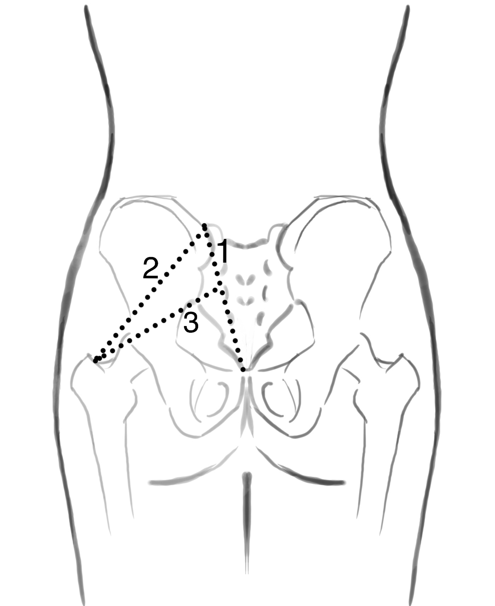
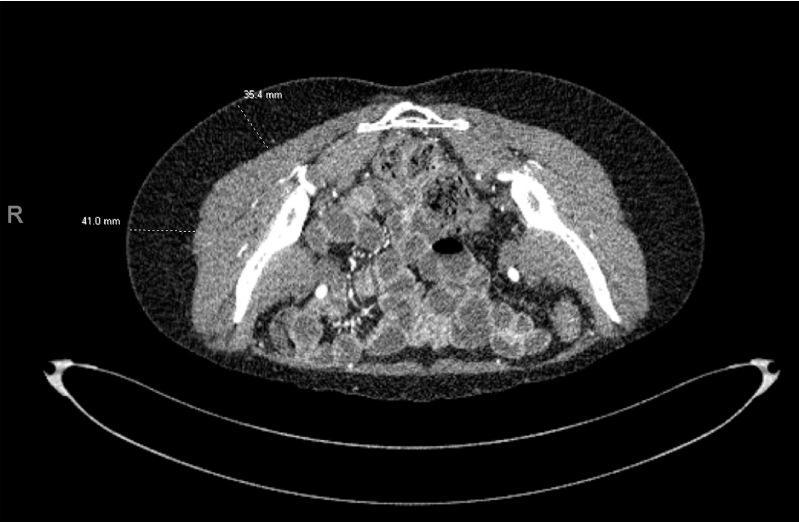

おしり（殿部＝でんぶ）の皮膚と脂肪を、大殿筋（だいでんきん＝おしりの大きな筋肉）を切り取らずに乳房再建へ移す方法を報告した論文です。上殿動脈（じょうでんどうみゃく＝骨盤の奥から出て、おしりの筋肉と皮膚を養う動脈）から、筋肉を貫いて皮膚へ立ち上がる穿通枝（せんつうし）を血流の茎（けい＝皮弁を養う血管の幹）にすることで、筋肉は体に残したまま、皮膚と脂肪だけを挙げられます。腹部（おなか）を提供部（ドナー＝組織を採る場所）に使えない乳房再建の患者にとって代わりのドナーとなり、DIEP皮弁（深下腹壁動脈穿通枝皮弁）と同じ「筋肉を温存する穿通枝皮弁」の考え方を、おしりに応用した術式とされます。
背景 ― おしりを乳房再建のドナーにする流れ
おしり（殿部）を乳房再建のドナーに使う発想自体は、この論文より前からありました。藤野豊美（ふじの・とよみ）らは1975年に、殿部から採った遊離皮弁（ゆうりひべん＝血管ごと切り離し、顕微鏡下で移植先の血管に縫い直す皮弁）を胸へ移す方法を報告しており、これはマイクロサージャリー（顕微鏡下の血管吻合手術）による乳房・胸壁再建の最初期の報告のひとつとされます。
その後、殿部の皮膚を大殿筋ごと移す遊離上殿筋皮弁（きんぴべん＝筋肉と皮膚をひとかたまりで移す皮弁）が乳房切除後の再建に応用され広まったとされますが、血管柄（けっかんへい＝皮弁を養う血管の茎）が短く、移植先で血管を届かせるために静脈移植を追加する必要が生じやすいことが、普及の妨げになったと指摘されています。
つまり、おしりは組織量が豊富で傷あとが下着に隠れる魅力的なドナーである一方、「筋肉ごと移す」やり方には血管柄が短いという弱点と、筋肉を犠牲にする代償がありました。この論文は、筋肉を取らずに殿部の皮膚と脂肪だけを移せないか、という問いから出発しています。
この論文がしたこと
著者らは、筋肉を犠牲にせずに（without muscle sacrifice）、おしりの皮膚と脂肪で乳房を再建する新しい方法を提示しました。抄録によれば、まず献体（けんたい＝解剖に供された遺体）での解剖を行い、上殿動脈と上殿静脈の筋皮穿通枝（きんぴせんつうし＝大殿筋の中を貫いて皮膚へ達する枝）を調べています。
そのうえで、上殿動脈とその近位（きんい＝体の中心寄り）の穿通枝を血流源とする皮膚・脂肪皮弁で、11の乳房を再建し、成功したと報告しています。抄録に記載されている症例数はこの「11乳房」で、それ以外の詳しい成績の数字は示されていません。
また、この皮弁は血管柄が長いため、移植先（胸側）の血管として内胸動静脈（ないきょうどうじょうみゃく＝胸骨の脇を走る血管）や胸背動静脈（きょうはいどうじょうみゃく＝わきの下から広背筋へ向かう血管）を使えると述べられています。従来の大殿筋皮弁と比べた利点として、抄録は「血管柄が長いこと」と「筋肉を犠牲にしないこと」の2点を挙げています。
解剖と手技の要点
ここから先は、原著の抄録には細かな記載がないため、その後の解剖学的研究で整理されてきた一般的な知見です。上殿動脈は骨盤の奥（内腸骨動脈＝ないちょうこつどうみゃく）から出て、坐骨（ざこつ）の切れ込み（大坐骨孔＝だいざこつこう）を通っておしりへ抜け、大殿筋を貫いて皮膚へ向かう、とされます。
この論文の核心は、その穿通枝を大殿筋の中で丁寧に剥がして（筋線維の間を割って追いかけ）、血管だけを取り出す点にあります。抄録が「筋皮穿通枝」と表現しているとおり、枝は筋肉の中を通りますが、筋肉そのものは体に残します。DIEP皮弁で腹直筋を残すのと同じ考え方を、大殿筋に対して行うわけです。筋肉の中を走る分まで血管を追えば、そのぶん血管柄を長くとれます。
穿通枝の位置は、体表の目印（ランドマーク）を手がかりに探します。手術前には超音波ドプラなどで穿通枝の位置を確認し、その枝を中心に紡錘形（ぼうすいけい＝木の葉のような形）の皮弁をデザインするのが一般的とされます。


結果
抄録に記されている成績は簡潔です。上殿動脈とその近位の穿通枝を茎とする皮膚・脂肪皮弁で11の乳房を再建し、成功したこと ― これが抄録の示す結果です。生着率（せいちゃくりつ＝皮弁が生き残った割合）や合併症の詳しい数字は、抄録には示されていません。したがって本ページでも、成績に関する具体的な数値は記載しません。
抄録が利点として明言しているのは次の2点です。第一に、血管柄が長いこと。これにより、移植先の血管として内胸動静脈や胸背動静脈を選べます。第二に、筋肉を犠牲にしないこと。従来の大殿筋皮弁が抱えていた「筋肉ごと移す」代償を避けられる、という位置づけです。
意義 ― 穿通枝皮弁の考え方を「おしり」へ広げた
この論文の意義は、DIEP皮弁で確立された「筋肉を残し、穿通枝1系統を茎にして皮膚と脂肪だけを移す」という穿通枝皮弁の設計思想を、殿部という別のドナーへ広げた点にあります。おしりを使う従来法の弱点だった「短い血管柄」と「筋肉の犠牲」を、穿通枝を筋肉の中まで追って挙げることで同時に解きにいった報告と読めます。
自家組織（じかそしき＝自分の体の組織）による乳房再建では、腹部を使うDIEP皮弁が第一の選択肢とされます。しかし、過去の開腹手術や腹部の組織量の不足などで腹部が使えない患者もいます。SGAP皮弁は、そうした場合の代わりのドナーとして用いられるようになったとされます。
報告の中心人物である Robert J. Allen は、DIEP皮弁を乳房再建へ広めた術者としても知られ、腹部・殿部・大腿など体のさまざまな部位で穿通枝皮弁による乳房再建の選択肢を広げていった流れの中に、この上殿動脈穿通枝皮弁（SGAP皮弁）も位置づけられます。なお、殿部の穿通枝皮弁には、おしりの下側（下殿部）の下殿動脈を使う下殿動脈穿通枝皮弁（IGAP皮弁）という姉妹版もあります。
この論文の要点
- おしり（殿部）の皮膚と脂肪を、大殿筋を犠牲にせずに乳房再建へ移す新しい方法を報告した。
- 献体での解剖で上殿動脈・上殿静脈の筋皮穿通枝（筋肉を貫いて皮膚へ達する枝）を調べ、その穿通枝を血流源とした。
- 上殿動脈とその近位の穿通枝を茎とする皮膚・脂肪皮弁で、11の乳房を再建し成功したと報告した（抄録に記載の症例数はこの11乳房のみ）。
- 血管柄が長いため、移植先の血管として内胸動静脈や胸背動静脈を使える。
- 従来の大殿筋皮弁に対する利点は、抄録によれば「血管柄が長いこと」と「筋肉を犠牲にしないこと」の2点。
- DIEP皮弁と同じ穿通枝皮弁の考え方をおしりへ応用した術式で、腹部をドナーに使えない乳房再建の代替ドナーとして位置づけられるとされる。
用語ミニ辞典
- 上殿動脈穿通枝皮弁（SGAP皮弁）
- 上殿動脈の穿通枝を血流源に、おしり（殿部）の皮膚と脂肪を、大殿筋を残したまま挙げる皮弁。superior gluteal artery perforator flap の略。腹部が使えない乳房再建の代替ドナーとして用いられる。
- 上殿動脈
- 骨盤の奥（内腸骨動脈）から出て、おしりの筋肉と皮膚を養う動脈。大坐骨孔を通って殿部へ抜け、大殿筋を貫いて皮膚へ向かう穿通枝を出す。SGAP皮弁の「SGA」はこの動脈のこと。
- 穿通枝（せんつうし）／筋皮穿通枝
- 深部の動脈から、筋肉や筋膜を貫いて（穿通して）皮膚へ立ち上がる細い枝。とくに筋肉の中を貫くものを筋皮穿通枝と呼ぶ。この枝を茎にして挙げる皮弁が穿通枝皮弁。
- 大殿筋（だいでんきん）
- おしりを形づくる大きな筋肉。従来の上殿筋皮弁はこれを皮膚ごと移していたが、SGAP皮弁では穿通枝だけを筋肉から剥がし、筋肉は体に残す。
- 遊離皮弁（ゆうりひべん）
- 血管ごと切り離し、顕微鏡下で移植先の血管に縫い直す皮弁。SGAP皮弁もこの遊離皮弁として、殿部から胸へ移される。
- 内胸動静脈／胸背動静脈
- 乳房再建で皮弁をつなぐ移植先の血管。内胸動静脈は胸骨の脇を、胸背動静脈はわきの下から広背筋へ向かう。SGAP皮弁は血管柄が長いため、これらを選んでつなげる。
- DIEP皮弁
- 深下腹壁動脈穿通枝皮弁。下腹部の皮膚・脂肪を腹直筋を残して移す穿通枝皮弁で、乳房再建の第一選択とされる。SGAP皮弁はこの考え方をおしりへ応用したもの。
- 提供部（ドナー）
- 皮弁の組織を採る場所。乳房再建ではまず腹部が選ばれるが、過去の手術や組織量の不足で腹部が使えないとき、おしり（SGAP）などが代わりのドナーになる。
本ページは形成外科の学習・参照を目的とした編集部によるオリジナルの日本語解説で、原著（英語）の逐語訳・全文転載ではありません。正確な内容・数値・図は必ず上記リンク先の原著をご確認ください。
掲載している図は、原著の図ではありません。原著の図は出版社が著作権を持ち転載できないため、同じ術式・同じ解剖を扱った無料公開（オープンアクセス／CC BY）論文の図を、出典とライセンスを明記して引用しています。